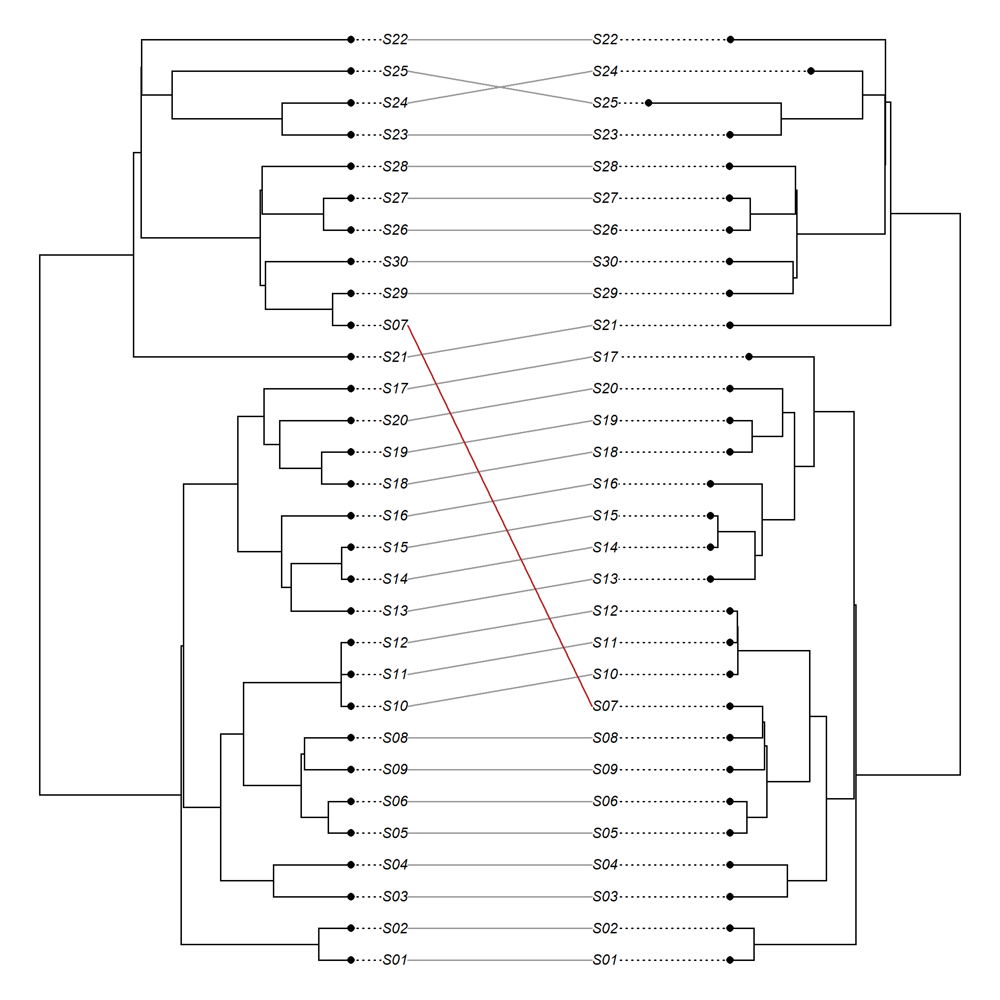
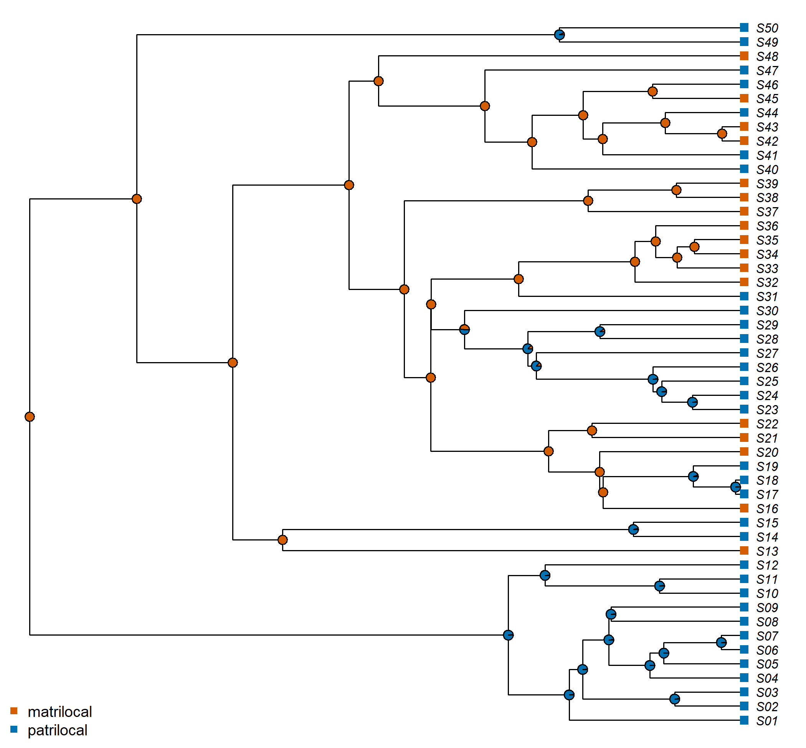

Chapter 14 Language Trees as Scaffolds for Cultural Evolution
Language trees are not only about languages. Because languages are usually passed from parents to children, a language phylogeny is also an estimate of the population history of the people who speak those languages, and that history can serve as a scaffold for studying how people organize kinship and marriage, how they govern themselves, what they believe, which stories they tell, what they make and what they eat. This research program, often called cultural phylogenetics or the study of cultural macroevolution, uses the statistical machinery of Chapters 12 and 13. Its central assumption is also its central risk: that a cultural trait was transmitted along the same paths as the language. This chapter reviews what the program has found, and asks throughout when a language tree is a good model of a cultural trait’s history and when it is not.
After reading this chapter you should be able to:
- state the logic of cultural phylogenetics and the assumptions about transmission on which it rests;
- distinguish linguistic inheritance from cultural transmission, explain when a language tree is a reasonable proxy for population history, and identify processes (language shift, diffusion, sex-biased transmission) that decouple cultural traits from language;
- describe the classic applications (kinship, political complexity, religion, folktales, material culture, color and number terms) and the design each used;
- reconstruct ancestral cultural states and test constrained models and coevolution with Mk models and Pagel’s test, over a sample of trees rather than a single tree;
- evaluate the robustness of phylogenetic comparative methods to horizontal transmission, and explain why its effect depends on who borrows from whom;
- compare language trees with genetic trees and interpret incongruence.
14.1 The cultural phylogenetics program
14.1.1 From Galton’s problem to phylogenetic anthropology
Cross-cultural comparison has been a central method of anthropology since the nineteenth century. It has also been haunted by Galton’s problem since the day it was first stated (Chapter 13). When Tylor reported associations between customs across hundreds of societies, Galton asked how many of those societies were really independent (Tylor 1889). For most of the twentieth century, anthropologists responded by sampling. The best-known solution is the Standard Cross-Cultural Sample (SCCS) of Murdock and White (1969). It selected 186 societies from Murdock’s Ethnographic Atlas (Murdock 1967) so that each represented a distinct “cultural province” and was as independent as possible from the others. The SCCS was a major achievement, and it remains in use. But it shares the limitations of genealogical sampling in typology. It discards most of the data. It treats relatedness as all-or-nothing. And it does not use the information contained in the history of change within groups of related societies.
Mace and Pagel (1994) argued in Current Anthropology that comparative biology had already solved this problem for species. Their solution was to treat related societies as related species and to analyze their traits with methods that model evolution along a phylogeny. Where would the phylogeny come from? For human societies the best available source is language. Language classifications and, increasingly, quantitative language phylogenies provide an explicit and independently derived hypothesis of population history. By the early 2000s Ruth Mace, Clare Holden, Mark Pagel, Russell Gray and their colleagues had turned this proposal into an active research program. Its first phase is summarized in Mace and Holden (2005) and in the edited volume of Mace et al. (2005). Later reviews include Mace and Jordan (2011), Gray and Watts (2017) and Mesoudi (2011).
14.1.2 The core logic
The program rests on a simple argument with three steps.
- Languages are mostly transmitted vertically, from one generation to the next within a community. A language phylogeny therefore approximates the history of population splits.
- Many cultural traits are also transmitted mostly vertically, within the same communities and along the same channels of upbringing and social learning as language. They are therefore expected to show phylogenetic signal on the language tree.
- If both of these hold, then the methods of Chapter 13 and Chapter 12 apply. We can reconstruct the cultural traits of ancestral societies, estimate rates and pathways of cultural change, and test hypotheses about the coevolution of cultural traits and about their relationship with the environment, all while controlling for shared history.
Each step can fail, and Section 14.2 and the critiques at the end of this chapter are largely about when and how. But the program has two strong advantages. First, language trees are estimated from data (basic vocabulary) that are largely independent of the cultural traits under study, which avoids circularity. Second, the trees are often dated (Chapter 10), so cultural change can be placed in absolute time, sometimes reaching back thousands of years before written records.
14.1.3 What questions can be asked?
Borgerhoff Mulder et al. (2006) and Gray et al. (2007) gave useful classifications of the questions that cultural phylogenetics can address. With minor adaptation, they are:
- Ancestral states. What was the post-marital residence of Proto-Austronesian society? Did Proto-Indo-European speakers practice dowry or bridewealth? Did the tellers of the earliest Indo-European folktales already know “The Smith and the Devil”?
- Rates and stability. Which traits change quickly and which slowly? Are some states “absorbing” or very stable once reached?
- Pathways and sequences. Does cultural change follow fixed sequences? Do societies move from simple to complex political organization one step at a time? Do changes in residence precede changes in descent?
- Coevolution. Do two traits evolve together, and if so, which one drives the other? Did the adoption of cattle herding lead to the loss of matrilineal descent?
- Environment and adaptation. Is a trait associated with an environmental variable once shared history is controlled for?
- Modes of transmission. Is a trait transmitted mostly vertically, so that it tracks the language tree, or horizontally, so that it tracks geography?
14.2 Linguistic inheritance and cultural transmission
The first step of the core logic deserves a closer look, because “a language tree is a tree of populations” is an approximation whose quality varies from case to case, and because the second step asks more of it than the first.
14.2.1 What a language tree estimates
A lexical phylogeny estimates the history of language lineages: the sequence in which a speech tradition split into traditions that ceased to share innovations in basic vocabulary (Chapters 3 and 7). It is built from one channel of transmission, the learning of a first language, mostly in childhood and mostly from caregivers and peers within the community. When communities split and stay apart, and when children learn the language of their parents’ community, that channel tracks the history of the communities, and the language tree is a good estimate of population history. This is the situation the program assumes, and in some families and periods (the settlement of Remote Oceania, where new islands were colonized by small groups who carried their language, is the clearest case) it is close to the truth.
Two things make the approximation imperfect even in good cases. The tree describes the history of a language, which can be passed to people who were not descended from its earlier speakers. And a population at any moment is a network of communities exchanging spouses, goods and ideas, so that its “splits” are rarely clean. A language tree is therefore best read as one estimate of population history, made with one kind of evidence, rather than as the population history itself (Chapter 11 makes the same point about the movement of lineages and of people).
14.2.2 When cultural traits travel without language
Cultural traits can follow paths that language does not. Four situations recur.
- Language shift. A community adopts the language of a neighboring or dominant group and keeps much of its own culture: its kinship system, its crafts, its rituals. On the language tree, the community now sits inside the clade of the language it adopted, and its traditional practices appear as innovations within that clade, or as evidence of convergence, when in fact they are retentions from a different history. Elite dominance and the spread of lingua francas produce the same decoupling on a larger scale.
- Diffusion without language change. Crops, technologies, religions and ritual complexes spread among neighbors who keep their own languages. A trait that diffuses in this way tracks geography and contact, not the language tree. Basketry in Native California, which tracks proximity more closely than linguistic affiliation (Jordan and Shennan 2003), is a well-documented case.
- Different channels of transmission. Different traits are learned from different people. A first language is learned in childhood; a craft may be learned through apprenticeship, possibly outside the community; ritual knowledge may be restricted to initiated specialists; a post-marital residence rule determines which sex moves between communities at marriage. Under patrilocal residence, for example, women move between communities, so traits learned from mothers may circulate across community boundaries more than traits learned from fathers. Each channel has its own history, and only some of them run parallel to the transmission of language.
- Ethnogenesis. New groups form by the merging of old ones, and their culture is a mosaic of traits with different origins (Moore 1994). A single branching tree may then describe none of the traits well.
14.2.3 Every trait has its own history
A useful way to think about these cases comes from the relationship between gene trees and species trees in biology (Section 16.2.1). Each gene has its own genealogy, which may differ from the history of the populations that carry it, because ancestral variation is sorted differently in different lineages and because genes flow between populations. In the same way, each cultural trait has its own history of transmission, and the language tree is one such history: that of the trait “language”. The cultural phylogenetic program assumes that the trait of interest shares that history. Two implications follow. First, even under perfectly vertical transmission, a trait that was variable within an ancestral community (several residence patterns coexisting, say) can sort into descendant communities in a way that does not match the language tree, the cultural analogue of incomplete lineage sorting. Second, the assumption of a shared history is testable, trait by trait, and should be tested rather than assumed.
14.2.4 Diagnosing co-transmission
Several diagnostics are available, none conclusive on its own.
- Phylogenetic signal of the trait on the language tree (Section 13.4) shows that related societies are similar, but in most regions related societies are also neighbors, so signal alone does not distinguish inheritance from diffusion among neighbors.
- Phylogenetic versus spatial models (Section 13.10) compare the two explanations directly, as Silva and Tehrani (2016) did for folktales and Towner et al. (2012) for western North American societies. Their power depends on the existence of related societies that are far apart and unrelated societies that are close together.
- Treelikeness statistics (Chapter 8) measure whether the trait data, taken together, have tree-like structure at all (Collard et al. 2006).
- Alternative scaffolds, such as genetic trees where they exist (Section 14.13), show whether conclusions depend on taking the language tree as the population history.
The robustness of comparative methods to horizontal transmission is taken up again in Section 14.14, with a simulation.
14.3 Methods in brief
The methods used in cultural phylogenetics are those of the previous two chapters. They are applied to cultural rather than linguistic traits, and almost always on samples of trees from Bayesian analyses of lexical data. Four features of the typical analysis deserve mention.
First, most cultural traits are coded as discrete characters with two to five states. Descent may be matrilineal, patrilineal, bilateral or ambilineal. Residence may be matrilocal (uxorilocal), patrilocal (virilocal), ambilocal or neolocal. Political organization may be acephalous, a simple chiefdom, a complex chiefdom or a state. These are analyzed with continuous-time Markov models, the Mk family introduced in Chapter 12, whose rate matrices can be constrained to test hypotheses about pathways of change. A model in which political complexity can only increase or decrease one level at a time is one such constraint.
Second, the dominant software for most of the history of the field has been BayesTraits (Pagel et al. 2004; Pagel and Meade 2006). BayesTraits integrates over a posterior sample of trees, uses reversible-jump MCMC to explore constraints on rate matrices, and implements Pagel’s test for correlated evolution (Chapter 13). Ancestral states are estimated as posterior probabilities averaged over trees. Nodes absent from some trees are handled by the “most recent common ancestor” approach, which reconstructs the state of the MRCA of a specified set of tips in each tree (Section 12.5).
Third, the questions about directionality are typically addressed by comparing the dependent model’s transition rates. In a four-state model for two binary traits, a large rate from “cattle present, matrilineal” to “cattle present, non-matrilineal”, with a much smaller rate for the same descent change in the absence of cattle, indicates that cattle make the loss of matriliny more likely. Flow diagrams summarizing which transitions are most probable are a common way of presenting these results.
Fourth, integrating over trees matters at least as much here as in linguistic applications. Cultural traits are typically coded for fewer societies than linguistic features, rates are poorly estimated, and asymmetric models can place estimates at the boundary of the parameter space (a rate of exactly zero), where a reconstruction on any single tree becomes deceptively certain. Section 14.15.2 shows how a reconstruction that is certain on the MCC tree can be far from certain over the posterior.
14.4 Kinship, descent, residence and marriage
Kinship has been a core topic of anthropology since the nineteenth century, and it was the first major area of application for cultural phylogenetics. Social anthropology had produced a body of evolutionary hypotheses about kinship that had never been tested statistically. One example is the claim that matrilineal descent is incompatible with the ownership of large livestock. Another is the “Main Sequence Theory”, which holds that changes in residence drive changes in descent and then in kin terminology.
Cattle and the loss of matriliny in Bantu-speaking Africa. An old anthropological dictum holds that “the cow is the enemy of matriliny”: matrilineal descent is rare among peoples who keep cattle. Holden and Mace (2003) tested this idea on a phylogeny of Bantu and related languages, which Holden (2002) had earlier built from basic vocabulary using maximum parsimony. They used Pagel’s correlated-evolution method with ethnographic data on descent and cattle keeping from the Ethnographic Atlas. The dependent model fitted significantly better than the independent one. The estimated rates showed that societies that acquired cattle were much more likely to lose matrilineal descent than societies without cattle. Changes in the other direction, such as acquiring cattle as a consequence of patrilineal descent, were not supported in the same way. The study set the template for many later analyses: an anthropological hypothesis about the coevolution of two traits, a language tree, Pagel’s test, and an interpretation of the rate matrix as evidence about the direction of causation. An earlier study by the same group (Holden and Mace 1997) used a similar approach to show that the cultural practice of dairying and the genetic trait of adult lactose digestion coevolved across populations, with the evidence suggesting that dairying came first.
Matrilocal residence in early Austronesian societies. Jordan et al. (2009) estimated the history of post-marital residence across Austronesian societies on a posterior sample of trees from lexical data. They coded residence from ethnographic sources and reconstructed ancestral states with Bayesian Mk models. The reconstruction indicated that matrilocal (uxorilocal) residence was the most probable state at the deepest nodes of the tree, including the ancestors of the Malayo-Polynesian subgroup. Shifts toward patrilocality occurred later, in many lineages independently. The result was relevant to debates about the social organization of the early Austronesian expansion. It also fitted with arguments, based partly on genetic data, that the early Austronesian expansion involved female-centered residence and sex-biased patterns of migration. It also illustrates a general methodological point. A trait’s current frequency (most Austronesian societies today are not matrilocal) can be a poor guide to its ancestral state. The asymmetry in transition rates, with matrilocality lost more readily than gained, matters as much as the distribution at the tips.
Comparable studies have addressed other families and other aspects of kinship. Fortunato et al. (2006) used Bayesian ancestral state estimation on Indo-European trees to examine the long-standing idea that dowry developed out of an earlier system of bridewealth. Fortunato and Jordan (2010) compared the histories of marital residence in Indo-European and Austronesian societies. Their reconstructions pointed to patrilocal (virilocal) residence as the most likely ancestral state in Indo-European, in contrast with the matrilocal reconstruction for Austronesian. Opie et al. (2014) analyzed descent and residence together on Bantu trees. They found that the order of changes predicted by Main Sequence Theory, in which residence changes first and descent follows, was not well supported, and that kinship systems could change along multiple pathways. Guillon and Mace (2016) asked a related question of kin terminology itself. Using a sample of 500 Bayesian trees of Bantu languages and Ethnographic Atlas data for 83 societies, they reconstructed the history of cousin terminology and found limited support for the hypothesis that it coevolved with descent and post-marital residence, concluding that the shaping of kinship terminology is multifactorial. Walker et al. (2011) reconstructed marriage practices among hunter-gatherer societies on several language phylogenies. Minocher et al. (2019) analyzed marriage patterns, such as polygyny and monogamy, in a globally representative sample of societies using a supertree of human populations (Duda and Zrzavý 2016) that combined linguistic and genetic information. They concluded that both socio-ecological factors and population history shape marriage systems. At an even more abstract level, Passmore and Jordan (2020) examined kinship terminologies (the ways languages classify relatives, such as whether a father’s brother and a mother’s brother are called by the same term). They found little evidence for universal evolutionary pathways across language families, a result reminiscent of the lineage-specific word-order dependencies of Dunn et al. (2011) (Chapter 13). Kinship terminologies are a special case for the question of Section 14.2: they are both cultural and linguistic, transmitted with the vocabulary that expresses them, so they are among the cultural traits most likely to share the language tree’s history.
14.5 Political complexity and social stratification
The rise and fall of political complexity. Do human societies evolve toward greater political complexity in a series of small steps, or can they jump from simple to complex forms? And is the trajectory one-way? Currie, Greenhill, Gray, et al. (2010) addressed these questions with data on the political organization of 84 Austronesian societies. They coded each society’s political organization on a four-level scale: acephalous (no political authority beyond the local community), simple chiefdom, complex chiefdom, and state. The analysis used a posterior sample of Austronesian language trees and compared Markov models with different constraints on the rate matrix, implemented in BayesTraits. In the best-fitting model, political complexity both rose and fell one level at a time; a close second allowed increases only one level at a time but let decreases skip levels. Under both models, societies did not jump from acephalous organization to a state without passing through the intermediate levels. Whether they could also collapse from complex to simple organization in one step was left open, since the two models received similar support. The study is a clean example of how a constraint on a rate matrix can embody a substantive theory, here the theory of sequential social evolution associated with mid-twentieth-century anthropology. It is also an example of how phylogenetic methods can test such a theory without assuming that all modern societies lie on a single “ladder” of progress.
Several later studies built on this design using Austronesian data. Watts et al. (2016) examined the role of ritual human sacrifice in the evolution of social stratification across a large sample of Austronesian cultures. They concluded that human sacrifice both promoted the emergence of stratified societies and made them less likely to revert to egalitarian organization. This was consistent with the “social control” hypothesis, in which elites used ritualized killing to deter challenges to their authority. Sheehan et al. (2018) found evidence that intensive agriculture involving long-term modification of the land (terracing, irrigation) coevolved with sociopolitical hierarchy. Kushnick et al. (2014) analyzed the evolution of land tenure norms and found evidence for a sequential pattern of change. Together, these studies made Austronesian the best-studied family in cultural macroevolution. This is partly because of the size and quality of its language trees (Gray et al. 2009) and partly because of the Pulotu database (Section 14.12).
The same logic has recently been applied at a global scale. Opie and Atkinson (2025) mapped trait data for 868 cultures onto a language tree representing relationships among cultures worldwide and tested competing accounts of state formation. Their Bayesian analyses indicated that intensive agriculture was as likely to be a consequence of state formation as a cause, whereas grain cultivation most likely preceded it and predicted the later emergence of taxation; writing more likely arose in tax-raising societies. The authors themselves note that a causal reading is limited by the assumptions of the phylogenetic model and by small samples for some traits, and a global language tree is a coarse scaffold for cultures whose traits often crossed linguistic boundaries (Section 14.2).
14.6 Religion
The relationship between religion and social complexity has been debated since Durkheim and Weber. A prominent recent hypothesis holds that belief in moralizing high gods (powerful supernatural beings concerned with human morality) helped large societies to cooperate by making people believe that their behavior was being monitored and judged. If so, moralizing gods should precede the evolution of political complexity.
Supernatural punishment and political complexity in Austronesia. Watts, Greenhill, et al. (2015) tested this idea with data from the Pulotu database (Watts, Sheehan, et al. 2015) for a large sample of Austronesian cultures, analyzed on a sample of language trees. They distinguished moralizing high gods from a broader category of broad supernatural punishment. The latter is the belief that supernatural agents, not necessarily high gods, punish moral transgressions, for example through ancestral spirits or impersonal forces. Using Pagel’s method and analyses of the order of change, they found that broad supernatural punishment tended to precede, and to facilitate, increases in political complexity. Moralizing high gods, by contrast, did not precede political complexity in the Austronesian data; where they appeared, they tended to follow it. The authors concluded that the role of religion in the evolution of complex societies in Austronesia was played by diffuse beliefs in supernatural punishment, not by moralizing high gods specifically.
Botero et al. (2014) took a global perspective. They analyzed the occurrence of moralizing high gods across several hundred societies in relation to ecological, social and political variables, with statistical controls for shared history and geographic proximity. Belief in moralizing high gods was more common in societies facing environmental hardship and in societies with more complex political organization. Later work based on the Seshat database (Section 14.12) brought the question to large-scale historical societies. That literature lies outside phylogenetic methods, because historical states and empires do not form a tree in any simple sense. But it shows how the same hypotheses can be tested on different kinds of historical data. Religion is also the clearest case of a cultural domain that often spreads independently of language: the world religions crossed language boundaries on a vast scale, so phylogenetic analyses of belief are most defensible for traditional religious systems in regions, such as much of the Pacific, where conversion is recent and documented.
14.7 Folktales and oral traditions
Folktales are an appealing target for phylogenetic analysis. They are transmitted orally from generation to generation, they vary in recognizable ways, and folklorists have catalogued them systematically. The Aarne-Thompson-Uther (ATU) index classifies thousands of international tale types, such as ATU 333 “Little Red Riding Hood” or ATU 330 “The Smith and the Devil”. Folklorists of the historic-geographic (Finnish) school had already tried to reconstruct the history of tales from the distribution of their variants. Phylogenetic methods offer a more formal version of that enterprise.
Tehrani (2013) analyzed 58 variants of the tale types “Little Red Riding Hood” (ATU 333) and “The Wolf and the Kids” (ATU 123) from Europe, Africa and Asia. He coded the variants for plot elements and characters and used parsimony, Bayesian and network methods. The analysis showed that the two tale types form distinct but related clusters. East Asian versions, which had been suggested as the source of the European tales, appeared instead to have evolved by blending elements of both tale types (ATU 333 and ATU 123), and most African tales grouped with ATU 123. The study also introduced a recurrent methodological concern. Folktales can be retold, combined and borrowed across linguistic boundaries, so network methods (Chapter 8) are needed alongside trees.
The ancient roots of Indo-European folktales. Silva and Tehrani (2016) took a different approach. Instead of building trees of tales, they mapped the presence and absence of 275 ATU “tales of magic” onto a phylogeny of Indo-European languages, treating each tale type as a binary trait. They first removed tale types whose distribution was better explained by spatial proximity than by linguistic relatedness, which suggested horizontal transmission. They then used Bayesian ancestral state reconstruction to estimate the probability that each remaining tale was present at various nodes of the Indo-European tree. Several tales were reconstructed with high probability at deep nodes. “The Smith and the Devil”, in which a smith sells his soul to an evil being in exchange for power and then outwits it, was reconstructed as probably present in Proto-Indo-European society. That would make it several thousand years old, consistent with its theme of metalworking in a society that had metallurgy. The analysis is a model of how to handle horizontal transmission explicitly: it tested co-transmission with language trait by trait (Section 14.2) before using the language tree. It is also a reminder that reconstructed ancestral states are estimates whose meaning depends on the tree, the dating and the coding of the traits.
14.8 Material culture
Archaeologists adopted phylogenetic methods at about the same time as anthropologists, but mostly for a different purpose. Instead of mapping traits onto language trees, they built trees of the artifacts themselves. O’Brien et al. (2001) applied cladistic methods to Paleoindian projectile points from the southeastern United States, treating attributes of shape and manufacture as characters and point types as taxa. Tehrani and Collard (2002) analyzed the designs of Turkmen textiles. They asked whether similarities among the weaving traditions of different groups reflected branching descent (phylogenesis) or blending through contact and intermarriage (ethnogenesis). They found that branching explained much of the variation, but that blending was also detectable. Matthews et al. (2011) later showed, using Iranian tribal textiles, that different classes of textile characters can have different transmission histories. Some track one history and others another, so a single tree may not describe all of a craft tradition.
The relationship between material culture and language has been tested directly. Jordan and Shennan (2003) compared basketry traditions among Native Californian groups with their linguistic relationships and with geographic distance. They found that basketry similarity tracked geographic proximity more closely than linguistic affiliation, suggesting substantial transmission of craft techniques across linguistic boundaries. This result is a useful counterweight to the assumption that cultural traits follow language trees. The extent to which they do is an empirical question, to be answered trait by trait. Collard et al. (2006) compared the treelikeness of a set of cultural datasets (artifacts, languages and other cultural traits) with that of biological datasets, using the retention index (Chapter 4). Cultural datasets turned out to be on average no less treelike than biological ones. That finding undercut the claim that culture is too reticulate for phylogenetic analysis. It did not mean, though, that every cultural dataset is treelike, and a treelike dataset of artifacts need not follow the language tree.
Two recent studies compare artifact or ritual histories with language trees directly. Buckley et al. (2025) inferred Bayesian phylogenies of Kra-Dai languages and of the looms used by their speakers in southwest China and Southeast Asia. The Hlai of Hainan were outgroups in both phylogenies, and closely related languages tended to go with similar loom types, but the two histories differed at deeper levels and in their overall patterns of change. Learmouth et al. (2024) coded 90 traits of adolescent initiation, mortuary practice and rock-art motifs for about 100 Pama-Nyungan societies and found a strong association between the language phylogeny and initiation ritual, but not mortuary ritual or rock art. Both results support the principle stated in Section 14.2: co-transmission with language has to be established trait by trait.
14.9 Music
Music has been studied with phylogenetic and population-genetic methods mainly through the lens of population structure. Rzeszutek et al. (2012) analyzed the structure of musical diversity across a sample of the world’s populations using methods borrowed from population genetics, such as analysis of molecular variance. They found that most musical diversity lies within populations rather than between them, as is also true of genetic diversity. Brown et al. (2014) compared musical, genetic and linguistic variation among indigenous populations of Taiwan and found significant correlations between musical and genetic structure. In Central Africa, Le Bomin et al. (2016) analyzed musical traits of Gabonese populations against their linguistic classification and argued that vertical transmission played the key role in shaping musical diversity. Music presents particular problems of coding (which features define a musical tradition?) and of sampling (recordings exist for some communities but not others). It is one of the less developed areas of cultural phylogenetics, and one with considerable room for growth.
14.10 Color and number terms
Some cultural traits are themselves linguistic: the semantic systems that languages use to carve up domains of experience. Color terms and numerals are the classic examples. They sit at the boundary between linguistic typology and cultural evolution, and because they are expressed in the vocabulary, they are among the cultural traits most likely to share the history of the language tree.
The evolution of color term systems in Pama-Nyungan. Berlin and Kay (1969) proposed that basic color term systems evolve in a fixed sequence. Languages with two terms distinguish dark/cool from light/warm. A third term is red. The fourth and fifth are green and yellow, in either order. Blue, brown and the remaining terms come later. This was an evolutionary claim, but for decades it was tested only on synchronic distributions. Haynie and Bowern (2016) tested it directly by reconstructing color systems on a Bayesian phylogeny of Pama-Nyungan languages from Australia, using data on the basic color terms of each language. They found that color systems change in both directions. Languages gain terms, but they also lose them, and the reconstructed ancestral systems did not always fit the expectation that systems only grow. Many transitions were consistent with the Berlin-Kay sequence, but the sequence was better described as a set of preferred pathways than as a strict ladder of increasing complexity. The study shows how phylogenetic methods turn a claim about “stages” into testable statements about transition rates, with the possibility of reversals. Section 13.7.4 describes how such pathway hypotheses can be coded and compared.
Zhou and Bowern (2015) applied similar methods to numeral systems in Pama-Nyungan. They modeled the upper limit of the numeral system (the highest number expressed by a simple numeral term) and its change over time. They found that languages gain and lose higher numerals, and they quantified the considerable uncertainty in reconstructed ancestral states. Both studies are notable for their focus on Australia, a continent long assumed to be dominated by diffusion, where Bayesian phylogenies of Pama-Nyungan (Bowern and Atkinson 2012) made such analyses possible.
Verkerk, Castillo Atehortua, et al. (2025) extended this kind of analysis to numeral systems with restricted ranges or non-decimal anchors in families of lowland South America (Arawakan, Pano-Tacanan, Tucanoan and Tupian) and New Guinea (Nuclear Torricelli, Nuclear Trans New Guinea, Ramu and Sepik). Their reconstructions suggest that the proto-languages of these families likely had restricted or anchor-2 systems, with shifts to anchor 5 in particular groups, although small family sizes limited statistical power.
14.11 Subsistence and economy
Subsistence strategies have deep consequences for social organization and demography. They also provide a bridge between cultural phylogenetics and the farming/language dispersal hypothesis (Bellwood and Renfrew 2002; Diamond and Bellwood 2003). Under that hypothesis, several of the world’s largest language families, including Austronesian, Bantu and perhaps Indo-European, spread with early farmers. Holden (2002) argued that the shape of the Bantu language tree was consistent with the spread of farming across sub-Saharan Africa. The coevolution of dairying and lactose digestion (Holden and Mace 1997) and of cattle keeping and descent (Holden and Mace 2003) has already been described. More broadly, Mathew and Perreault (2015) analyzed the behavioral repertoires of 172 small-scale societies in western North America. They found that variation was better explained by cultural phylogeny, measured by language relationships, than by ecological variables. This suggests that social learning and inheritance of traditions, rather than independent adaptation to local environments, is the main mode of human behavioral adaptation. That result has implications for every claim, in linguistics and in anthropology, that a trait is “adapted” to an environment (Chapter 13). Subsistence is also a domain in which traits clearly can spread without language, as crops and domestic animals did across many linguistic boundaries, so the relative weight of language-tree inheritance and diffusion has to be estimated, not assumed.
14.12 Databases
Cultural phylogenetics depends on systematically coded cross-cultural data linked to language phylogenies. The main resources are listed in Table 14.1. Appendix G gives details on access.
| Database | Content | Coverage | Link to languages |
|---|---|---|---|
| Ethnographic Atlas (Murdock 1967) | Coded ethnographic variables on kinship, marriage, subsistence, settlement, politics | Over a thousand societies worldwide | Via D-PLACE, matched to Glottolog languoids |
| Standard Cross-Cultural Sample (Murdock and White 1969) | Many coded variables for a sample chosen to minimize non-independence | 186 societies | Via D-PLACE |
| D-PLACE (Kirby et al. 2016) | Integrates the Ethnographic Atlas, SCCS, Binford’s hunter-gatherer data and others with environmental data and language phylogenies | More than a thousand societies | Each society linked to a Glottolog languoid; includes published phylogenies |
| Pulotu (Watts, Sheehan, et al. 2015) | Supernatural beliefs and practices, plus social and environmental variables | Austronesian cultures | Linked to the Austronesian Basic Vocabulary Database and its trees |
| Seshat (Turchin et al. 2015) | Historical and archaeological data on social complexity, warfare, religion and more | Past polities from the Neolithic onward | Not tree-based; polities in time and space |
| Grambank, WALS, ABVD | Linguistic data used as traits or to build trees | See Chapter 3 | Glottolog |
The Ethnographic Atlas of George Peter Murdock, published in installments in the journal Ethnology and compiled as a book in 1967, remains the backbone of most global analyses. Its codes are coarse, and they refer to an “ethnographic present” that varies from the sixteenth to the twentieth century, depending on when the sources were written. D-PLACE (Database of Places, Language, Culture and Environment) made these data far more usable (Kirby et al. 2016). It linked each society to a Glottolog language code, to geographic coordinates, to environmental variables, and to published language phylogenies. That made it possible to run phylogenetic and spatial analyses of ethnographic data without reassembling the data by hand. The link from society to language is itself an assumption of the kind discussed in Section 14.2: a society is placed on the language tree by the language its members speak. Pulotu (Watts, Sheehan, et al. 2015) was built specifically for phylogenetic analyses of religion in Austronesia, with careful coding protocols and sources. Seshat (Turchin et al. 2015) covers historical polities rather than ethnographic societies. Analyses of Seshat data have proposed that a single dimension of social complexity structures much of the variation among past societies (Turchin et al. 2018). Seshat is not organized around language trees, though, and its analyses rely on spatial and temporal rather than phylogenetic controls.
Ethnographic data were collected by many observers, at different times, with different interests and biases. Coding decisions compress complex and often contested descriptions into a few categories. Missionary or colonial accounts may describe a society that was already transformed by contact. Before treating a coded variable as a trait to be reconstructed back thousands of years, read the coding definitions, check the sources for at least a sample of societies, and consider how much of the variation might reflect the observers rather than the observed.
14.13 Language trees and genetic trees
If languages are transmitted vertically, and if populations split and remain isolated, then language trees and genetic trees should be similar. Cavalli-Sforza et al. (1988) famously juxtaposed a tree of human populations based on classical genetic markers with a grouping of languages into large phyla and argued that the two corresponded remarkably well. Their argument was later developed at book length (Cavalli-Sforza et al. 1994). The correspondence was contested. Some of the linguistic groupings, such as macro-families like “Nostratic” and “Amerind”, were not accepted by most linguists. The genetic trees were based on limited data. And the method of comparison was visual. But the question remains important. Where language and genes agree, we can be more confident that both reflect population history. Where they disagree, the mismatch is itself a clue to processes such as language shift (a population adopting another group’s language), elite dominance or sex-biased admixture, the same processes that decouple cultural traits from language (Section 14.2).
Modern studies compare genetic and linguistic histories with explicit statistics. Hunley et al. (2008) examined Northern Island Melanesia, where Oceanic (Austronesian) and non-Austronesian (“Papuan”) languages are spoken side by side. They found that genetic and linguistic relationships were partially congruent, with the relationship between the two differing between the language groups. Filippo et al. (2012) tested hypotheses about the Bantu expansion by comparing linguistic and genetic distances among Bantu-speaking populations. They found a correlation consistent with a demic expansion, in which people moved, and not merely languages. Creanza et al. (2015) compared worldwide phonemic and genetic variation, finding that phonemic differences between populations reflect their geographic and genetic relationships at regional scales. At the global scale, Barbieri et al. (2022) assembled genetic and linguistic data for a large number of populations. They identified many cases where a population’s genetic affinities and its language family do not match, which they interpreted mostly as language shift. Matsumae et al. (2021) compared genetic, linguistic and cultural variation among language families of northeast Asia.
A simple and useful tool for comparing two trees on the same set of populations is the tanglegram: the two trees are drawn facing each other, and lines connect the same population in each. Nodes are rotated to minimize crossings, so that the remaining crossings indicate genuine incongruence. In R, phytools::cophylo() does the rotation and plotting. Tree distances such as the Robinson-Foulds distance (Chapter 2) and Mantel tests on the two patristic distance matrices quantify the congruence. Below we simulate a “gene tree” that differs from a “language tree” by a few rearrangements and plot both.
set.seed(3)
ltree <- pbtree(n = 30, scale = 5)
ltree$tip.label <- sprintf("S%02d", 1:30)
gtree <- phangorn::rNNI(ltree, moves = 3) # minor incongruence
# language shift: in the language tree, S07 is moved next to a distant society
far <- names(sort(cophenetic(ltree)["S07", ], decreasing = TRUE))[1]
ltree_shift <- drop.tip(ltree, "S07")
pos <- which(ltree_shift$tip.label == far)
ltree_shift <- bind.tip(ltree_shift, "S07", where = pos, position = 0.3)
cp <- cophylo(ltree_shift, gtree, rotate = TRUE, print = FALSE)#> Rotating nodes to optimize matching...
#> Done.plot(cp, fsize = 0.6, link.lwd = 1.2, link.lty = "solid",
link.col = ifelse(cp$assoc[, 1] == "S07", "firebrick", "grey60"))
Figure 14.1: A tanglegram comparing a simulated language tree (left) with a simulated population genetic tree (right) for the same 30 societies. The genetic tree differs by a few nearest-neighbor interchanges and one language shift: society S07 has adopted a language from a distant clade.
gtree_ord <- cophenetic(gtree)[ltree_shift$tip.label, ltree_shift$tip.label]
c(RF_distance = phangorn::RF.dist(ltree_shift, gtree),
max_RF = 2 * (Ntip(gtree) - 3),
Mantel_p = mantel.test(cophenetic(ltree_shift), gtree_ord, nperm = 999)$p)#> RF_distance max_RF Mantel_p
#> 26.000 54.000 0.001The two trees are clearly related: the Mantel test rejects independence of the two distance matrices. But the Robinson-Foulds distance shows that a number of splits differ. The language shift of S07 shows up as a single long crossing line, the kind of local incongruence that tanglegrams reveal at a glance. For a cultural analysis, the question is which tree S07’s traditions followed: if its residence rule or its crafts were retained through the shift, a reconstruction on the language tree would treat them as innovations in a clade to which, historically, they never belonged.
From the biologist’s toolbox: cophylogenetic methods. Biologists studying hosts and parasites, or plants and pollinators, have developed a toolkit for comparing two trees whose tips are linked. Distance-based tests such as ParaFit (Legendre et al. 2002) and PACo (Balbuena et al. 2013) ask whether the two trees are more congruent than expected by chance. They also identify which individual links contribute most to the congruence or incongruence. Event-based reconciliation methods, implemented in programs such as Jane (Conow et al. 2010), explain the incongruence between two trees by a minimum-cost combination of cospeciation, duplication, host switching and loss. In a linguistic setting, “cospeciation” corresponds to the joint splitting of populations and languages, and “host switching” to language shift. Reconciliation would then give a principled way of estimating how often language shift has occurred and where. A related set of methods compares gene trees with species trees under the multispecies coalescent, which separates incongruence due to incomplete lineage sorting from that due to gene flow (Chapter 16). To our knowledge, these methods have rarely if ever been applied to language-gene comparisons. Most studies in that area still rely on visual comparison, Mantel tests or correlations of distance matrices; Section 16.4.5 discusses them further.
14.14 Critiques
Cultural phylogenetics has been controversial from the start. The critiques fall into four groups.
14.14.1 Horizontal transmission and ethnogenesis
The most fundamental objection is that culture does not evolve like a tree. Human societies exchange ideas, goods, spouses and practices across boundaries, and new groups often form by the merger of old ones. Terrell (1988) contrasted the image of history as a family tree with history as an “entangled bank”, in the Pacific above all. Moore (1994) argued that ethnogenesis, the formation of new ethnic groups by fusion and recombination, has been as important in human history as branching (phylogenesis), and that cladistic methods, which assume branching, are therefore inappropriate. Boyd et al. (1997), in a careful theoretical discussion, distinguished several scenarios. In some, cultures are tightly integrated “hierarchical” units that are transmitted together. In others, cultures are collections of independent traits with separate histories. A tree may be meaningful in the first kind of scenario but not in the second.
Defenders of the program have responded in three ways. The first is empirical: measure treelikeness rather than assume it. Cultural datasets are often about as treelike as biological ones (Collard et al. 2006), and Chapter 8 describes the tools (delta scores, Q-residuals, NeighborNet) for doing so. The second is to separate traits that track the tree from traits that track geography, as Silva and Tehrani (2016) did for folktales. The third is to test the robustness of comparative methods to horizontal transmission by simulation. Currie, Greenhill, and Mace (2010) simulated continuous cultural traits evolving on trees with varying amounts of horizontal transmission between neighboring societies. They found that phylogenetic comparative methods remained reasonably accurate under the levels of borrowing they considered realistic, so that horizontal transmission did not by itself invalidate the approach. Nunn et al. (2010) carried out similar simulations comparing different methods for cross-cultural comparison. Towner et al. (2012) developed a method that analyzes vertical (phylogenetic) and horizontal (spatial-neighbor) transmission simultaneously, using neighbor graphs. Applied to western North American societies, it found that the relative importance of the two modes varied considerably among traits. Simulation can also cut the other way. Lukas et al. (2021) built a simulation tool that varies the size of the sample, missing data, the shape of the tree and the rate, number of variants and mode of transmission of a trait, and showed that for two example datasets particular combinations of these properties can produce high rates of both false-positive and false-negative inferences. Evans et al. (2021) distil the debate into two principles: draw on several lines of evidence when deciding whether, and which, phylogenetic methods suit a cross-cultural dataset, and consider that different cultural traits may have had different histories in space and time.
The simulation below explores the same question in a deliberately simple setting. In the vocabulary of Section 6.10, it is a test of the robustness under misspecification of PGLS: the data are generated with horizontal transmission that the model ignores. Two independent traits evolve on the tree. Then each society “borrows” a fraction \(h\) of its trait values from a single contact partner. We consider two scenarios for who the partner is. In the first, each society’s partner is its closest relative on the tree, as in a dialect continuum or a recently expanded family whose members still live side by side. In the second, the partner is the society’s nearest neighbor in a landscape where locations are unrelated to the tree, as in a region where groups of different origins live intermingled. In each scenario we measure how often OLS and PGLS on the language tree report a false correlation between the two traits.
set.seed(12)
htree <- pbtree(n = 60, scale = 5)
htree$tip.label <- sprintf("S%02d", 1:60)
Wh <- chol(solve(vcv(htree))) # PGLS whitening matrix
pgls_p <- function(y, x) {
f <- lm(Wh %*% y ~ Wh %*% cbind(1, x) - 1)
coef(summary(f))[2, 4]
}
patr <- cophenetic(htree); diag(patr) <- Inf
partner_relative <- apply(patr, 1, which.min) # closest relative
geo <- as.matrix(dist(matrix(runif(120), 60, 2))); diag(geo) <- Inf
partner_geographic <- apply(geo, 1, which.min) # nearest neighbor in space
run_scenario <- function(nn, h_levels = c(0, 0.1, 0.2, 0.3), nrep = 300) {
borrow <- function(v, h) (1 - h) * v + h * v[nn] # partial copying
rel <- mean(patr[cbind(1:60, nn)]) # mean distance to partner
t(sapply(h_levels, function(h) {
p <- replicate(nrep, {
x <- borrow(fastBM(htree), h); y <- borrow(fastBM(htree), h)
c(ols = summary(lm(y ~ x))$coefficients[2, 4], pgls = pgls_p(y, x))
})
c(partner_distance = rel, borrowing = h,
FPR_OLS = mean(p["ols", ] < 0.05), FPR_PGLS = mean(p["pgls", ] < 0.05))
}))
}
sim_h <- rbind(run_scenario(partner_relative), run_scenario(partner_geographic))
knitr::kable(sim_h, digits = 2,
caption = "False positive rates of OLS and PGLS for two independent traits as horizontal transmission increases. Top four rows: each society borrows from its closest relative. Bottom four rows: each society borrows from its nearest geographic neighbor, with locations unrelated to the tree. The first column gives the mean patristic distance (thousands of years, summed along both lineages) between a society and its contact partner; 300 replicates per row.")| partner_distance | borrowing | FPR_OLS | FPR_PGLS |
|---|---|---|---|
| 0.80 | 0.0 | 0.55 | 0.07 |
| 0.80 | 0.1 | 0.53 | 0.05 |
| 0.80 | 0.2 | 0.55 | 0.07 |
| 0.80 | 0.3 | 0.56 | 0.11 |
| 7.39 | 0.0 | 0.54 | 0.04 |
| 7.39 | 0.1 | 0.55 | 0.17 |
| 7.39 | 0.2 | 0.56 | 0.43 |
| 7.39 | 0.3 | 0.54 | 0.57 |
Without borrowing, PGLS has close to the nominal 5% false positive rate, while OLS has a greatly inflated one. What happens next depends on who borrows from whom. When societies borrow from their closest relatives, borrowing adds similarity where the tree already predicts it, and PGLS degrades only slowly. When they borrow from unrelated neighbors, even modest borrowing creates pairs of similar societies that the tree treats as nearly independent. The PGLS false positive rate then rises quickly, and at the highest level of borrowing simulated it is no better than that of OLS. The contrast helps in reading the broadly reassuring conclusion of Currie, Greenhill, and Mace (2010). Phylogenetic methods can be robust to horizontal transmission, but “moderate” borrowing is not a fixed quantity. Its effect depends on how contact is structured relative to the tree. Borrowing among close relatives is largely absorbed by the phylogenetic covariance. Borrowing across distantly related lineages is not. The remedy, when borrowing across lineages is suspected, is to model it explicitly, for example with a spatial covariance component as in Chapter 13, or with neighbor-graph models (Towner et al. 2012).
Section D.4.1 shows that the partial copying used here transforms the phylogenetic covariance matrix in a simple way, and that a GLS that uses the transformed matrix restores the nominal false positive rate when the contact network is known.
14.14.2 Correlation, causation and confounding
Cultural traits covary with each other and with the environment in complex ways. Many published correlations between cultural traits and ecological variables have turned out to be fragile once relatedness, proximity and covariation among predictors are controlled for. Bromham, Hua, et al. (2018) showed this for claims linking pathogen load to cultural and political variables. Bromham et al. (2021) examined the hypothesis that spicy cuisines in hot countries are an adaptation to reduce foodborne infection. They found little support for it once the confounding effects of shared history, geography and covariation with other variables were considered. These studies make the same argument as the linguistic examples in Section 13.11.4: controlling for phylogeny is necessary but not sufficient for causal inference.
14.14.3 Which tree?
A language tree is a hypothesis about the history of languages. It is not automatically the history of the cultural traits of their speakers, or of the speakers’ genes (Section 14.2). A society that shifted its language, such as many groups in the Americas or in Africa, brings its non-linguistic traditions into a new linguistic lineage. The language tree will then misrepresent the history of those traditions. Elite dominance, intermarriage and migration can all decouple language from culture. Cultural phylogeneticists respond by using language trees as one of several possible scaffolds, comparing results across trees (including genetic trees, where available), and testing whether traits show phylogenetic signal on the tree before relying on it. A further question is which language tree: a posterior sample of trees carries uncertainty that a single summary tree hides, and Section 14.15.2 shows how much it can matter.
14.14.4 The data and their interpretation
Finally, there are critiques of the data themselves. Ethnographic codes are coarse, refer to different time periods, and reflect the biases of their sources. Societies are not bounded units, and the same “society” may be described differently by different observers. Reconstructions of ancestral cultural states, such as matrilocal Proto-Austronesians or a Proto-Indo-European “Smith and the Devil”, can easily be over-interpreted as narratives about the lives of real ancestral communities. They carry the full uncertainty of the tree, the dating, the model and the coding, and they assume that the trait was transmitted with the language. There are also ethical questions. Reconstructions of the “original” culture of a people may be used in political or legal contexts, and descendant communities may have their own views about how their history is represented. None of these critiques is fatal to the program. Together, they explain why its best practitioners combine phylogenetic analyses with careful source criticism, explicit treatment of uncertainty and modest interpretation (Gray et al. 2007, 2010).
14.15 Worked examples in R
This section reproduces the logic of three classic designs on simulated data: an ancestral state reconstruction of post-marital residence, in the spirit of Jordan et al. (2009); a test of sequential evolution of political complexity, following Currie, Greenhill, Gray, et al. (2010); and a test of coevolution between cattle keeping and descent, following Holden and Mace (2003). The data are simulated so that the true answers are known, and the trait is simulated on the language tree itself, so these are parameter-recovery exercises that assume the co-transmission discussed in Section 14.2. The residence example is then repeated over a sample of trees.
14.15.1 Ancestral residence
We simulate a tree of 50 societies with a root age of 5,000 years. Residence evolves under a model in which matrilocal societies (M) become patrilocal (P) at a much higher rate than the reverse, and the root state is matrilocal.
set.seed(101)
atree <- pbtree(n = 50, scale = 5)
atree$tip.label <- sprintf("S%02d", 1:50)
Qres <- matrix(c(-0.3, 0.3, 0.05, -0.05), 2, 2, byrow = TRUE,
dimnames = list(c("M", "P"), c("M", "P")))
res <- sim.history(atree, Qres, anc = "M", message = FALSE)$states
table(res)#> res
#> M P
#> 17 33fit_er <- ace(res, atree, type = "discrete", model = "ER")
fit_ard <- ace(res, atree, type = "discrete", model = "ARD")
c(AIC_ER = AIC(fit_er), AIC_ARD = AIC(fit_ard))#> AIC_ER AIC_ARD
#> 48.35 46.37#> [1] 0.0000 0.3333#> M P
#> 1 0Although two-thirds of the modern societies are patrilocal, the reconstruction places matrilocality at the root with high probability. This is because the asymmetric model has learned that matrilocality is easily lost and rarely regained. The pattern of patrilocal societies scattered across many clades, with matrilocal ones also present in several clades, is best explained by an ancestral matrilocal state with repeated independent losses. Figure 14.2 shows the reconstruction.
cols_res <- c(M = "#D55E00", P = "#0072B2")
plot(atree, cex = 0.65, label.offset = 0.08, no.margin = TRUE)
nodelabels(pie = fit_ard$lik.anc, piecol = cols_res, cex = 0.3)
tiplabels(pch = 15, col = cols_res[res], cex = 1) # tip states on top of pies
legend("bottomleft", legend = c("matrilocal", "patrilocal"), pch = 15,
col = cols_res, bty = "n", cex = 0.8)
Figure 14.2: Maximum-likelihood marginal reconstruction of post-marital residence (M = matrilocal, P = patrilocal) on a simulated tree of 50 societies under an asymmetric (all-rates-different) Markov model. Pie charts show the probability of each state at internal nodes.
Two cautions apply. First, the ARD model’s estimate of the rate of regaining matrilocality may be at or near zero. With 50 societies, the data say little about rare transitions, and an estimate of zero should not be read as “impossible”. Second, the reconstruction at the root is sensitive to the model of the root state. Here ace() uses equal prior weights on the two states. Alternatives, such as weighting by the stationary distribution or by the method of FitzJohn et al. (2009) (available as pi = "fitzjohn" in phytools::fitMk()), can give different answers when rates are asymmetric. Chapter 12 discusses these choices.
14.15.2 Ancestral residence over a sample of trees
The first caution has a consequence that only becomes visible over a sample of trees. When a rate is estimated at zero, the reconstruction on that tree becomes certain: if matrilocality can never be regained, every matrilocal society must descend from a matrilocal ancestor, and the root must be matrilocal. Whether the estimate hits zero depends on the details of the tree. We repeat the reconstruction on a mock posterior sample of 50 trees, built from the true tree by random nearest-neighbor interchanges and branch-length noise, and on the MCC tree of that sample.
set.seed(102)
post_a <- phangorn::rNNI(atree, moves = 6, n = 50)
post_a <- lapply(post_a, function(t) {
t$edge.length <- t$edge.length * rlnorm(nrow(t$edge), 0, 0.3); t })
class(post_a) <- "multiPhylo"
root_M <- sapply(post_a, function(t)
ace(res[t$tip.label], t, type = "discrete", model = "ARD")$lik.anc[1, "M"])
mcc_a <- phangorn::maxCladeCred(post_a)
on_mcc_a <- ace(res[mcc_a$tip.label], mcc_a, type = "discrete",
model = "ARD")$lik.anc[1, "M"]
round(c(MCC_tree = on_mcc_a, mean_over_trees = mean(root_M),
share_trees_M_favored = mean(root_M > 0.5)), 3)#> MCC_tree mean_over_trees share_trees_M_favored
#> 1.000 0.696 0.660On the MCC tree, as on the true tree, the root is matrilocal with probability 1. Over the sample, matrilocality is favored at the root in only 66% of trees, and the average probability is 0.7: on many trees the asymmetric model settles on the opposite boundary solution and reconstructs a patrilocal root with near certainty. Both kinds of certainty are artifacts of fitting a rate at zero to a few dozen societies. Averaging over trees, and over rates in a Bayesian analysis, as BayesTraits does, replaces them with a more honest statement of uncertainty. A conclusion reported from a single summary tree would have hidden the instability entirely (Section 11.10 discusses the general problem).
14.15.3 Sequential evolution of political complexity
We now simulate a four-level political complexity trait (0 = acephalous, 1 = simple chiefdom, 2 = complex chiefdom, 3 = state) on a tree of 84 societies. Increases happen only one step at a time, while decreases can skip levels. We then compare three models, each specified as an index matrix of rate parameters for ape::ace() (zero means a transition is not allowed, and equal integers mean equal rates):
- stepwise: increases and decreases one level at a time;
- up stepwise, down any: increases one level at a time, decreases by any number of levels (the generating model);
- any jump: any transition allowed, with one rate for increases and one for decreases.
lev <- c("0", "1", "2", "3")
Qpol <- matrix(0, 4, 4, dimnames = list(lev, lev))
for (i in 1:3) Qpol[i, i + 1] <- 0.4 # stepwise increases
for (i in 2:4) Qpol[i, 1:(i - 1)] <- 0.15 # decreases may skip levels
diag(Qpol) <- -rowSums(Qpol)
set.seed(5)
ptree <- pbtree(n = 84, scale = 5)
pol <- sim.Mk(ptree, Qpol, anc = "0")
table(pol)#> pol
#> 0 1 2 3
#> 33 23 14 14idx <- function(m) matrix(m, 4, 4, byrow = TRUE, dimnames = list(lev, lev))
models <- list(
stepwise = idx(c(0,1,0,0, 2,0,1,0, 0,2,0,1, 0,0,2,0)),
up_step_down_any = idx(c(0,1,0,0, 2,0,1,0, 2,2,0,1, 2,2,2,0)),
any_jump = idx(c(0,1,1,1, 2,0,1,1, 2,2,0,1, 2,2,2,0)))
pol_fits <- lapply(models, function(m)
ace(pol, ptree, type = "discrete", model = m))
aic_pol <- sapply(pol_fits, AIC)
round(aic_pol - min(aic_pol), 2)#> stepwise up_step_down_any any_jump
#> 4.65 0.00 7.51The generating model (“up stepwise, down any”) is preferred. The fully stepwise model is penalized because it cannot accommodate the collapses that skip levels, and the “any jump” model because it allows increases that never happen. With real data, Currie, Greenhill, Gray, et al. (2010) used BayesTraits to compare a larger set of such constrained models, integrating over trees and using Bayes factors. The logic was the same.
14.15.4 Cattle and matrilineal descent
Finally, we simulate two binary traits, cattle keeping (C or noC) and descent (Mat or Pat), under a dependent model. In it, the loss of matrilineal descent is twelve times faster in cattle-keeping societies than in others. We then use Pagel’s test to compare the independent model with a model in which only descent depends on cattle, and with the full dependent model.
st <- c("noC|Mat", "noC|Pat", "C|Mat", "C|Pat")
Qc <- matrix(0, 4, 4, dimnames = list(st, st))
Qc["noC|Mat", "C|Mat"] <- 0.2; Qc["noC|Pat", "C|Pat"] <- 0.2 # gain cattle
Qc["C|Mat", "noC|Mat"] <- 0.05; Qc["C|Pat", "noC|Pat"] <- 0.05 # lose cattle
Qc["noC|Mat", "noC|Pat"] <- 0.05; Qc["noC|Pat", "noC|Mat"] <- 0.05
# cattle erode matriliny
Qc["C|Mat", "C|Pat"] <- 0.6; Qc["C|Pat", "C|Mat"] <- 0.02
diag(Qc) <- -rowSums(Qc)
set.seed(9)
ctree <- pbtree(n = 80, scale = 5)
cs <- sim.Mk(ctree, Qc, anc = "noC|Mat")
cs <- setNames(as.character(cs), names(cs))
cattle <- setNames(sapply(strsplit(cs, "|", fixed = TRUE), `[`, 1), names(cs))
descent <- setNames(sapply(strsplit(cs, "|", fixed = TRUE), `[`, 2), names(cs))
table(cattle, descent)#> descent
#> cattle Mat Pat
#> C 15 29
#> noC 32 4fit_dep_y <- fitPagel(ctree, cattle, descent, method = "ace", dep.var = "y")
fit_dep <- fitPagel(ctree, cattle, descent, method = "ace")
c(AIC_independent = fit_dep_y$independent.AIC,
AIC_descent_depends = fit_dep_y$dependent.AIC,
AIC_both_depend = fit_dep$dependent.AIC)#> AIC_independent AIC_descent_depends AIC_both_depend
#> 139.5 123.9 125.8#> C|Mat C|Pat noC|Mat noC|Pat
#> C|Mat -0.627 0.627 0.000 0.000
#> C|Pat 0.000 0.000 0.000 0.000
#> noC|Mat 0.190 0.000 -0.256 0.066
#> noC|Pat 0.000 0.190 0.786 -0.976The model in which descent depends on cattle keeping is preferred. In its estimated rate matrix, the rate from C|Mat to C|Pat (loss of matriliny with cattle) is much larger than the rate from noC|Mat to noC|Pat (loss of matriliny without cattle). This mirrors the conclusion of Holden and Mace (2003). The usual caveats of Pagel’s test apply (Chapter 13). Results can be driven by a few historical events, and the direction of dependence is harder to establish than its existence. In the real Bantu case, a further caveat is that the spread of cattle, the spread of patrilineal descent and the spread of particular Bantu subgroups may all reflect a single historical process that the tree only partly captures. And cattle, unlike descent rules, are a trait that can spread between neighbors without any change of language, so the language tree may describe the history of descent better than that of cattle keeping.
From the biologist’s toolbox: trait-dependent diversification. All of the analyses in this chapter treat the tree as given and ask how traits evolve on it. Biologists also ask the reverse question: does a trait affect the rate at which lineages split or go extinct? The BiSSE model (Maddison et al. 2007) and its relatives (MuSSE for multistate traits, QuaSSE for continuous ones, HiSSE with hidden states (Beaulieu and O’Meara 2016)) estimate state-dependent speciation and extinction rates jointly with the trait’s transition rates. For language, the analogous question is whether a cultural trait, such as farming, political centralization or a writing system, affects the rate at which language lineages split or disappear. That question is central to the farming/language dispersal hypothesis and to discussions of language endangerment. To our knowledge, such models have rarely if ever been fitted to language trees. Two serious caveats apply. First, Rabosky and Goldberg (2015) showed that BiSSE-type models often detect spurious trait-dependent diversification when rates vary for other reasons. Hidden-state models and careful null models are therefore essential. Second, language trees are typically sampled very incompletely and non-randomly with respect to traits, which biases diversification estimates unless sampling is modeled explicitly.
- Cultural phylogenetics uses language trees as estimates of population history and treats cultural traits as characters evolving along them. This addresses Galton’s problem for cross-cultural comparison.
- A language tree estimates the history of one channel of transmission, the learning of a first language. It approximates population history when communities split and children learn their parents’ language, and it can misrepresent the history of cultural traits that travel by shift, diffusion, intermarriage or specialist learning.
- Every cultural trait has its own history, and co-transmission with language must be tested trait by trait: by phylogenetic signal, by comparing phylogenetic and spatial models, by treelikeness, and by comparison with other scaffolds such as genetic trees.
- Classic applications include the coevolution of cattle keeping and matrilineal descent in Bantu-speaking Africa, matrilocal residence in early Austronesian societies, the sequential rise of political complexity in Austronesia, the role of supernatural punishment and human sacrifice in social evolution, the deep history of Indo-European folktales, and the evolution of color and number terms in Pama-Nyungan.
- The key tools are Mk models with constrained rate matrices (for pathways and sequences), Pagel’s test and its directional variants (for coevolution), and Bayesian ancestral state reconstruction integrated over posterior trees. Reconstructions on a single tree can be deceptively certain, especially when rates are estimated at zero.
- D-PLACE, Pulotu and Seshat link coded cultural data to languages, phylogenies, environments and time. The quality and time depth of the underlying ethnographic data limit what can be inferred.
- Language and genetic trees can be compared with tanglegrams, tree distances, Mantel tests and, potentially, cophylogenetic reconciliation. Mismatches point to language shift and admixture.
- The effect of horizontal transmission on phylogenetic methods depends on who borrows from whom: borrowing among close relatives is largely absorbed, borrowing across lineages is not and should be modeled explicitly.
14.16 Exercises
Conceptual
- Explain why a language tree can be a good estimate of the history of post-marital residence rules in one region and a poor one in another. Give a concrete scenario for each.
- A society shifted to the language of its neighbors three centuries ago but kept its matrilineal descent. Describe how this would appear in an ancestral state reconstruction of descent on the language tree, and how it could mislead a test of coevolution between descent and cattle keeping.
- Why are kinship terminologies and color terms more likely than crafts or religious practices to share the history of the language tree? What does this imply for which cultural domains are best suited to cultural phylogenetics?
- Explain the analogy between incomplete lineage sorting of genes and the sorting of cultural variation that existed within an ancestral community. What pattern on the language tree would it produce?
- In the horizontal transmission simulation, borrowing from close relatives barely affects PGLS while borrowing from unrelated neighbors does. Explain why, in terms of the covariance matrix the model assumes.
Computational
- Rerun
cultural-traits-residence-treeswithmodel = "ER"and withphytools::fitMk(..., pi = "fitzjohn")followed byancr(). How do the spread of root probabilities across trees and the MCC value change? Explain the role of boundary estimates. - Modify
run_scenario()so that each society borrows from its nearest geographic neighbor, but with locations simulated by Brownian motion on the tree (fastBM()for each coordinate) rather than uniformly. Where do the false positive rates fall between the two scenarios of the chapter? - Using
ltree_shiftandgtree, simulate a binary cultural trait on the genetic tree withsim.Mk()and estimate its phylogenetic signal on both trees (for example with the log-likelihood offitMk()against a star tree fromstree()). Does the trait’s signal identify the tree on which it evolved? - Repeat the political complexity analysis on 30 societies instead of 84 (
pbtree(n = 30, ...)) 50 times, and record how often the generating model is preferred by AIC. What does this suggest about the sample sizes needed for such tests?
Research
- You want to test whether the adoption of plough agriculture led to the loss of matrilineal descent in a region where several language families meet. Design the study: the scaffold (language tree, genetic tree, or both), the treatment of language shift and diffusion, the comparison of phylogenetic and spatial models, the integration over trees, and the coding of the ethnographic data.
- A project proposes to reconstruct the “original” religious practices of a language family’s ancestors from ethnographic data and to present the results to descendant communities. Write a methods and ethics plan that addresses co-transmission with language, uncertainty in the trees and the reconstructions, the quality of colonial-era sources, and the communication of the results.
14.17 Further reading
- Mace and Pagel (1994), “The comparative method in anthropology.” The founding statement of the program, with commentary from critics.
- Mace and Holden (2005), “A phylogenetic approach to cultural evolution.” A short, clear review of the early results in Trends in Ecology and Evolution.
- Mace et al. (2005) (eds.), The Evolution of Cultural Diversity: A Phylogenetic Approach. The first edited volume on the subject, covering language, kinship, material culture and methods.
- Gray et al. (2007), “The pleasures and perils of Darwinizing culture (with phylogenies).” A thoughtful defense of the program that takes the critiques seriously.
- Borgerhoff Mulder et al. (2006), “Cultural macroevolution and the transmission of traits.” A review of the questions, methods and evidence on modes of transmission.
- Boyd et al. (1997): A careful theoretical discussion of when cultures can be expected to have tree-like histories, and when their traits have separate histories.
- Currie, Greenhill, Gray, et al. (2010) and Watts et al. (2016). Two exemplary studies from Austronesia showing how constrained Markov models and correlated-evolution tests answer questions about social evolution.
- Silva and Tehrani (2016): A model of explicit handling of horizontal transmission in an ancestral state analysis.
- Kirby et al. (2016): The D-PLACE paper, essential for anyone planning a global cross-cultural analysis.
- Currie, Greenhill, and Mace (2010): The key simulation study of how horizontal transmission affects phylogenetic comparative methods.
- Gray and Watts (2017), “Cultural macroevolution matters.” A programmatic overview of the field and its prospects.